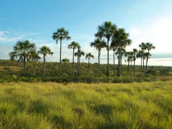

Biomas brasileiros são regiões que compreendem grandes ecossistemas constituídos por uma comunidade biológica com características semelhantes. Segundo o Instituto Brasileiro de Geografia e Estatística (IBGE), o Brasil possui seis biomas:
O bioma Amazônia compreende uma área na qual se encontra a maior floresta tropical do mundo. A Floresta Amazônica estende-se por nove países da América do Sul, sendo sua maior porção localizada no Brasil, ocupando cerca de 40% do território. É o maior de todos os biomas brasileiros. Caracteriza-se pela presença de diversos ecossistemas e por deter grande biodiversidade na fauna e na flora. Esse bioma compreende uma região constituída pela maior bacia hidrográfica do mundo: a Bacia Amazônica.
Os principais representantes da fauna são onça-pintada, boto-cor-de-rosa, arara-azul, capivara, tatu e cobras, como a cascavel e a jararaca. A flora é constituída por aproximadamente 30 mil espécies das quase 100 mil existentes na América Latina. Entre as espécies de plantas mais conhecidas, destaca-se a vitória-régia, característica dos igapós.
O bioma Amazônia compreende uma região que abrange a maior bacia hidrográfica do mundo, a Bacia Amazônica, que detém 20% da água doce do planeta. O Rio Amazonas é o principal e o maior em volume de água do mundo, recebendo vários afluentes.
Compreende uma região de clima quente e úmido, apresentando umidade do ar elevada durante todo o ano. O índice pluviométrico também é elevado, sendo mais de 2000 mm de chuvas provenientes da própria floresta.
A vegetação do bioma Amazônia divide-se em: mata de terra firme, mata de várzea e mata de igapó. As matas de terra firme compreendem os estratos mais altos, portanto, não são inundadas. As matas de várzea representam áreas inundadas durante alguns períodos do ano. Já as matas de igapó constituem os estratos mais baixos da vegetação e apresentam-se inundadas praticamente durante todo o ano.
O solo da Amazônia é arenoso e apresenta uma camada de húmus resultante da deposição de floras, frutos e restos de animais. Apesar disso, apenas cerca de 14% do território pode ser considerado fértil para práticas agrícolas.
O Cerrado é considerado o segundo maior bioma da América Latina e do Brasil. Conhecido como savana brasileira, apresenta grande biodiversidade e compreende uma área de elevado potencial aquífero. Esse bioma caracteriza-se por apresentar diversas fitofisionomias em virtude dos vários contatos geográficos que possui com outros biomas. Ao norte, limita-se com o bioma Amazônia; a leste e ao nordeste, com a Caatinga; ao sudoeste, com o Pantanal; e a sudeste, com a Mata Atlântica.
O Cerrado possui uma grande variedade biológica. Apresenta cerca de 837 espécies de aves, 185 espécies de répteis, 194 espécies de mamíferos e 150 anfíbios. Os principais representantes da fauna do Cerrado são tucano, tamanduá-bandeira, lobo-guará, onça-parda, veado-campeiro, entre outros. Apesar da grande variedade, a fauna do Cerrado não é totalmente conhecida, principalmente em relação ao grupo de invertebrados.
Em relação à flora, estudiosos estimam que há cerca de dez mil espécies de vegetais que já passaram por identificação. Muitas espécies são usadas para fins medicinais e para alimentação. São representantes da flora do Cerrado: ipê, cagaita, angico, jatobá, pequi, barbatimão, entre outros.
O Cerrado abriga nascentes dos principais rios brasileiros, compreendendo, segundo o IBGE, nove das doze bacias hidrográficas existentes no Brasil. Além de abrigar tantas bacias hidrográficas, o Cerrado localiza-se numa região em que existem grandes aquíferos, como o Guarani e o Bambuí. Por isso, esse bioma é considerado berço das águas.
O clima do bioma Cerrado é predominantemente tropical sazonal, apresentando duas estações bem definidas: invernos secos e verões chuvosos. O período de seca tem início no mês de maio e termina no mês de setembro. Já o período chuvoso inicia-se em outubro e finaliza-se em abril. A média pluviométrica é de 1500 mm, e a temperatura média anual é de 22ºC, variando ao longo desses períodos.
O Cerrado apresenta vegetações distribuídas em formações savânicas, formações florestais e formações campestres. As espécies variam entre plantas arbóreas, herbáceas, arbustivas e cipós, distribuindo-se entre estrato lenhoso e estrato herbáceo. Além das árvores de troncos tortuosos, que podem apresentar até 20 metros, há também cactos e orquídeas no Cerrado. A vegetação desse bioma apresenta tonalidades de verde, amarelo e tons amarronzados ocasionados pela descoloração causada pela incidência solar.
Os solos do Cerrado são antigos (Período Terciário) e caracterizam-se, principalmente, pela profundidade e drenagem. São bastante porosos e permeáveis, propiciando o processo de lixiviação (processo erosivo provocado a partir da lavagem da camada superficial do solo). Apresentam cores avermelhadas e dividem-se em latossolos e podzólicos. Os latossolos são avermelhados, possuem acidez e são pobres em nutrientes. Já os podzólicos ou argissolos apresentam coloração mais escura e são propícios a sofrer processos erosivos.
O bioma Caatinga compreende cerca de 11% do território brasileiro, ocupando boa parte da Região Nordeste até a porção norte de Minas Gerais. O nome dado a esse bioma tem origem indígena e significa “floresta branca”, denominação que remete às características dessa vegetação ao longo da estação seca. Considerado o bioma mais seco, a Caatinga apresenta baixos índices pluviométricos.
Segundo alguns estudiosos, a Caatinga é um bioma exclusivo do Brasil, por isso, a maioria das suas espécies é endêmica (ocorre somente numa determinada área). Entre os biomas brasileiros, é o que possui a botânica menos conhecida. As espécies mais características da sua flora são mandacaru, juazeiro, umbu, xiquexique, entre outras. A flora varia de acordo com características locais, como índice pluviométrico e particularidades do solo.
A fauna da Caatinga é rica em biodiversidade, contando com cerca de 178 mamíferos, 591 aves, 177 espécies de répteis, 79 anfíbios, 241 peixes e 221 espécies de abelhas. Os principais representantes desse bioma são jacaré-do-papo-amarelo, jiboia, ararinha-azul, cágado e soldadinho-do-araripe.
A Caatinga é caracterizada por ter rios intermitentes, ou seja, rios que secam durante um período do ano. Se comparados aos intermitentes, são poucos os rios perenes nesse bioma. Um exemplo deles é o São Francisco. Os rios da Caatinga nascem nas cabeceiras das serras e chapadas. O lençol freático da região abrangida por esse bioma possui baixo nível de água em virtude da escassez de chuvas e do solo pouco permeável.
O bioma Caatinga compreende a região em que predomina o clima semiárido, o qual define as principais características desse bioma. Os níveis pluviométricos atingem cerca de 800 mm ao ano. O clima semiárido possui dois períodos, um de chuva e um de seca. Nos períodos chuvosos, os níveis pluviométricos alcançam os 1000 mm por ano. Já nos períodos de seca, esse índice cai para 200 mm por ano. A temperatura média anual fica entre 25º C e 30º C. Nessa região, ao longo do período de seca, algumas áreas são castigadas pela forte insolação.
A vegetação desse bioma apresenta características específicas, como queda das folhas durante o período de seca. Geralmente, as árvores são baixas e tortuosas, e a paisagem é composta por arbustos e cactos. Entre as principais características está o xeromorfismo, ou seja, adaptação das plantas para sobrevivência em regiões com pouca disponibilidade de água e clima seco por meio, por exemplo, de mecanismos de armazenamento de água. As raízes da vegetação, normalmente, cobrem o solo para conseguirem captar o maior volume de água possível
O bioma Mata Atlântica ocupa cerca de 13% do território brasileiro e compreende a região costeira do Brasil, indo dos estados do Rio Grande do Norte ao Rio Grande do Sul. Esse bioma é composto por variados ecossistemas florestais e por uma biodiversidade semelhante à do bioma Amazônia. Hoje resta menos de 10% da mata nativa, que sofre com o intenso desmatamento, responsável pela extinção de diversas espécies desse bioma.
A fauna do bioma Mata Atlântica é semelhante à do bioma Amazônia, contando com aproximadamente 850 espécies de aves, 370 espécies de anfíbios, 200 espécies de répteis, 270 espécies de mamíferos e 350 espécies de peixes. Cerca de 39% dos mamíferos desse bioma são endêmicos. Os principais representantes da fauna são micos, tamanduás, tucanos, jaguatiricas, rãs, onças-pintadas, bichos-preguiça, entre outros.
A flora da Mata Atlântica conta com aproximadamente 20 mil espécies de vegetais, das quais 8 mil existem apenas nessa região. Cerca de 55% das espécies arbóreas e 40% das espécies não arbóreas são endêmicas, existindo apenas nesse bioma. Considerada uma das florestas com maior biodiversidade, a Mata Atlântica conta com o recorde de plantas lenhosas.
A Mata Atlântica compreende a região onde se localizam sete bacias hidrográficas que se alimentam dos rios São Francisco, Paraíba do Sul, Paraná, entre outros. As águas dessa região abastecem cerca de 110 milhões de brasileiros.
O clima da Mata Atlântica é o tropical úmido. Apresenta temperaturas elevadas, altos índices pluviométricos e elevada umidade do ar, com escassez de períodos de estiagem. Em virtude de sua extensão, esse bioma também apresenta climas como tropical de altitude (Região Sudeste) e subtropical (Região Sul).
A vegetação do bioma Mata Atlântica é diversificada em decorrência de sua extensão. Apresenta vegetações ombrófilas (vegetações de folhas largas e perenes) e estacionais. É composta por árvores de médio e grande porte, cujas copas tocam-se, caracterizando uma formação contínua de florestas que podem alcançar até 60 metros de altura.
Os solos que compõem a Mata Atlântica são geralmente rasos e ácidos, extremamente úmidos e pobres em decorrência da pouca incidência solar, que é impedida de alcançar a superfície em virtude do estrato arbóreo que compõe esse bioma. A pouca profundidade do solo e os altos níveis pluviométricos propiciam processos erosivos e deslizamentos nas partes mais altas.
O bioma Pantanal é considerado uma das maiores planícies alagadas do mundo, compreendendo os estados do Mato Grosso e Mato Grosso do Sul. É o menor bioma em extensão territorial do Brasil, ocupando cerca de 2% do território nacional. É um bioma com grande biodiversidade, que vem sendo ameaçada pela ação antrópica. Esse bioma sofre influência de outros biomas, como Amazônia, Cerrado e Mata Atlântica.
A fauna do bioma Pantanal apresenta uma característica incomum: espécies de outros biomas que se encontram ameaçadas aglomeram-se na região do Pantanal. Sua fauna é composta por 132 espécies de mamíferos, 463 espécies de aves, 113 espécies de répteis, 41 espécies de anfíbios e 263 espécies de peixes. Destacam-se, nesse bioma, o tuiuiú, o cervo-do-pantanal, a arara-azul, o jacaré-do-pantanal, entre outros.
A flora do Pantanal conta com cerca de duas mil espécies de plantas segundo a Embrapa. Muitas dessas espécies possuem fins medicinais. A maioria dessas plantas provém de outros biomas, tendo, portanto, raras espécies endêmicas. São exemplos da flora do Pantanal: vitória-régia, aguapé, orquídea, palmeira, figueira, entre outras.
O Pantanal compreende a bacia hidrográfica do Rio Paraguai. Os principais rios que alimentam a rede hidrográfica da região são: Rio Paraguai, Rio Cuiabá, Rio São Lourenço, Rio Miranda, entre outros. No período das cheias, boa parte da planície pantaneira alaga-se, fazendo com que o solo não seja capaz de absorver toda a água.
O clima predominante no Pantanal é o tropical com características de continentalidade. Apresenta períodos de seca e períodos de chuva. As temperaturas médias ficam em torno de 25º C, contudo há uma grande amplitude térmica, com temperaturas que podem alcançar máximas de 40º C e mínimas próximas a 0º C.
A vegetação do bioma Pantanal é muito diversificada em decorrência da grande influência de outros biomas e também por conta do encharcamento do solo durante um período do ano. É composta por matas, cerradões, savanas, campos inundáveis (brejos). O curso dos rios apresenta matas ciliares (floresta mais densa) que os acompanham. Normalmente, a vegetação é aberta e varia conforme o relevo. Nos terrenos alagados, é possível encontrar espécies aquáticas e, raramente, tapetes de gramíneas.
O solo que constitui o bioma Pantanal é originado da deposição de fragmentos rochosos provenientes de áreas de maior altitude. Apresenta baixa impermeabilidade e reduzida fertilidade. Isso ocorre porque esse solo apresenta excesso de água, o que dificulta a decomposição da matéria orgânica. No período de seca, os solos apresentam uma espécie de areia composta por restos de animais e vegetais, o que lhes dá um pouco de fertilidade.
O bioma Pampa, conhecido também como Campos Sulinos, ocupa cerca de 2% do território brasileiro, abrangendo o território do estado do Rio Grande do Sul. O nome “pampa” tem origem indígena e designa uma região plana. A paisagem desse bioma é composta, em sua maioria, por campos nativos. O Pampa apresenta grande biodiversidade.
A fauna do bioma Pampa é bastante diversificada, contando com cerca de 500 espécies de aves, 100 espécies de mamíferos e uma grande variedade de insetos, que contribui para a existência de várias espécies de aves. Aproximadamente 40% das espécies são endêmicas. Os principais representantes da fauna são ema, perdiz, pica-pau, joão-de-barro, veado-campeiro, preá, entre outros.
A flora desse bioma conta com, aproximadamente, três mil espécies vegetais, com predominância de gramíneas, que alcançam cerca de 450 espécies. É possível encontrar também espécies de leguminosas e cactáceas. Como principais exemplos da flora, podemos citar: capim-forquilha, grama-tapete, babosa-do-campo, trevo-nativo, amendoim-nativo, entre outros.
O Pampa compreende uma área constituída por duas bacias hidrográficas, a bacia hidrográfica Costeira do Sul e a bacia hidrográfica do Rio da Prata. Os principais rios são: Rio Uruguai, Rio Santa Maria, Rio da Prata, Rio Jacuí, Rio Ibicuí e Rio Vacacaí. A hidrografia desse bioma apresenta elevado potencial hidrelétrico e é extremamente navegável.
O clima característico do bioma Pampa é o temperado do tipo subtropical frio, apresentando temperaturas médias em torno de 19º C. Esse bioma apresenta uma particularidade: as quatro estações são bem definidas.
A vegetação do Pampa ou dos Campos Sulinos é constituída, basicamente, por vegetação campestre normalmente uniforme, como as gramíneas. Aparenta um tapete herbáceo baixo que pode chegar até 50 centímetros. Há dois tipos de fitofisionomias: campos limpos e campos sujos. Os campos limpos caracterizam-se por não apresentarem arbustos, ao contrário dos campos sujos, onde esses arbustos são encontrados.
Os solos do Pampa são, geralmente, pouco férteis e propícios à erosão. Em virtude da prática agrícola (monocultura) realizada nessa área e da pecuária, uma grande parte desse bioma foi devastada, intensificando os processos erosivos, tornando os solos arenosos.